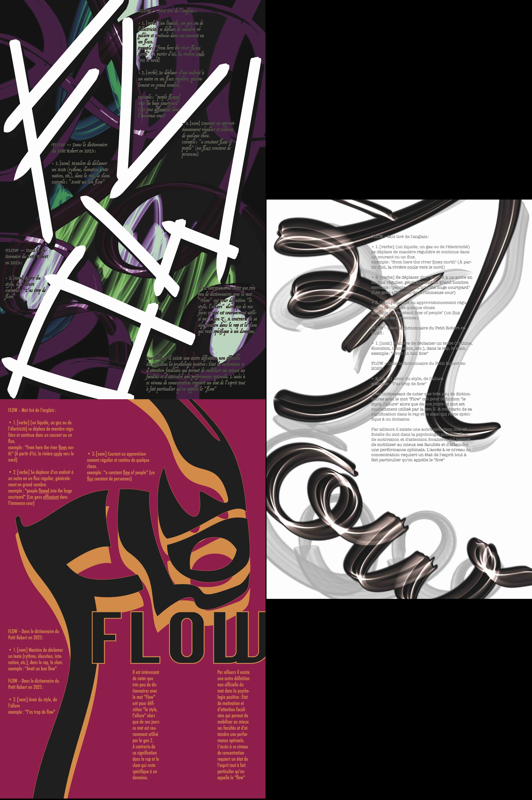
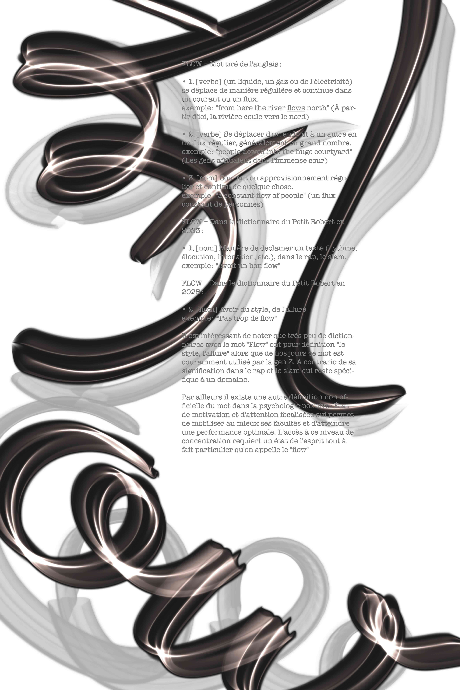
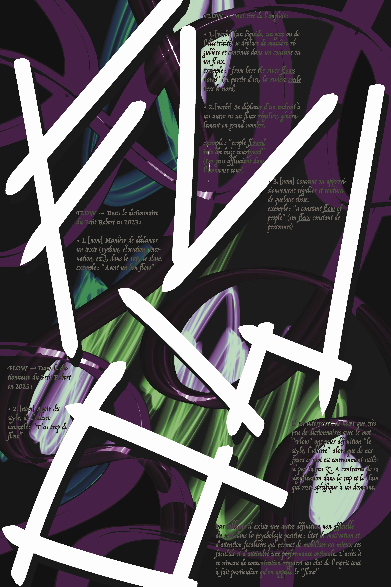
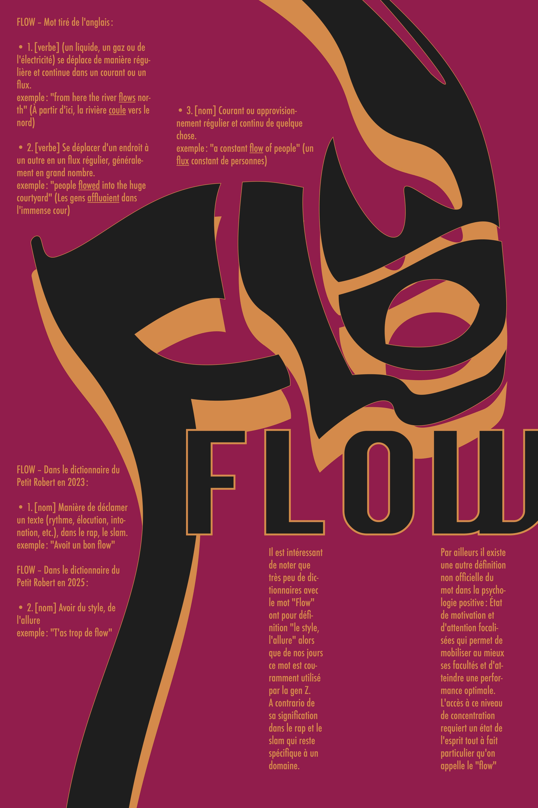

Dans le contexte d'un projet en design graphique, je devais réaliser trois affiches typographiques avec un néologisme (nouveau mot). J'ai choisi le terme "Flow", directement tiré de l'anglais et récemment ajouté au dictionnaire. Ce mot possède de nombreuses définitions, je trouvais intéressant de le mettre en avant en le sachant très utilisé parmi la gen Z et presque jamais dans les autres générations.

→ 1. [verbe] (un liquide, un gaz ou de l'électricité) se déplace de manière régulière et continue dans un courant ou un flux ; exemple : "from here the river flows north", à partir d'ici, la rivière coule vers le nord
→ 2. [verbe] Se déplacer d'un endroit à un autre en un flux régulier, généralement en grand nombre ; exemple : "people flowed into the huge courtyard", les gens affluaient dans l'immense cour
→ 3. [nom] Courant ou approvisionnement régulier et continu de quelque chose ; exemple : "a constant flow of people" (un flux constant de personnes)
Dans le dictionnaire du Petit Robert en 2023 (seconde définition en 2025) :
→ 1. [nom] Manière de déclamer un texte (rythme, élocution, intonation, etc.), dans le rap, le slam ; exemple : "Avoit un bon flow"
→ 2. [nom] Avoir du style, de l'allure ; exemple : "T'as trop de flow"
Il est intéressant de noter que très peu de dictionnaires avec le mot "Flow" ont pour définition "le style, l'allure" alors que de nos jours ce mot est couramment utilisé par la gen Z. A contrario de sa signification dans le rap et le slam qui reste spécifique à un domaine.
Par ailleurs il existe une autre définition non officielle du mot dans la psychologie positive : État de motivation et d'attention focalisées qui permet de mobiliser au mieux ses facultés et d'atteindre une performance optimale. L'accès à ce niveau de concentration requiert un état de l'esprit tout à fait particulier qu'on appelle le "flow".

En français le flux possède une définition éloigné de sa version anglaise tout en conservant le même esprit, la notion de fluidité. En terme typographique, ça m'évoque des arabesques, un surplus d'ornementation. Les couleurs servent à appuyer un flow plus sobre et esthéquiment plus conventionel. L'ombre sous le Flow sert à le mettre en avant tout en faisant référence aux défilés de modes dans lesquels beaucoup de lumières permettent de faire des ombres portées. Ainsi le flow se retrouve dans les silouhettes d'ombres. Le titre est un lien direct avec la signification anglaise du mot tout en ressemblant au mot "influence" qui est propre au mot français.

Le Flow pour moi est un instanté, souvent ce mot me vient en croisant des personnes qui de par leurs vêtements et attitude me l'évoquent. Puisque la perception du flow est unique à tous, j'ai choisi l'une des esthétiques qui me touche le plus. Les couleurs et l'aspect de superpositions sont dans une ambiance cyber-punk inspiré de la série Arcane. Le lettrage est écrit rapidement de traits posés sans y réfléchir au préalable. Le but était d'obtenir quelque chose d'à la fois fouilli mais avec sa propre organisation. Cette affiche m'évoque des musiques dès que je la regarde, référence personelle à la première définition du flow, autour de la musique. Le choix du titre sert à mettre en avant une esthétique qui m'est propre.

Ma dernière affiche représente là où pour moi le flow est toujours présent, les masques de carnaval. la couleur rose en fond est là pour appuyer la vivacité en contraste avec le noir qui sert à appuyer la dimension mystique du carnaval. Le masque écrit le mot "flow", il a été également écrit en dessous pour expliciter le flow constant des masques là où le lettrage est plus discret et évoque le flow spécifique de chacun. L'objectif était d'avantage de permettre aux spectateurs de voir le lettrage en y faisant attention car le flow passe par le regard. Le titre est un jeu de mot entre constant et instantané, pour l'ambivalence du flow.